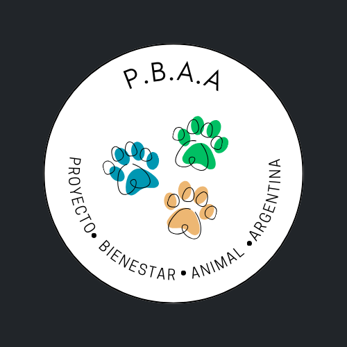

 Proyecto Bienestar Animal Argentina (P.B.A.A.)
Desde Refuerzo Positivo ONG, tenemos como objetivo "Transformar la relación entre humanos y animales en Argentina", mediante una estrategia integral que fomente la conciencia social, optimice recursos y fortalezca la legislación. Teniendo como pilares temas como: El abandono, maltrato y sobrepoblación de mascotas;
La falta de recursos en refugios; La poca o nula participación de los organismos estatales; La desigualdad en el acceso a servicios veterinarios; El débil cumplimiento de las normativas existentes y la poca efectividad de las mismas.
Asi es.. és una ardua tarea, que compromete a distintos actores sociales. Por éste motivo, los invitamos a ser parte del proyecto. Haciendolo propio y teniendo la satisfacción final de lograr una mejora integral en la calidad de vida de aquellos que no tienen voz ni voto. Nuestros pequeños compañeros de vida!
Conciencia y Educación
Pilar fundamental para llevar a cabo todo cambio socio-cultural de raiz. "Sembrar hoy para cosechar mañana".
Las Campañas educativas sobre las mascotas y el autismo, tenencia responsable, vacunación, castración, lenguaje y comportamiento, prevención del maltrato y legislacion vigente, etc. Serán los estandartes del proyecto. Para ello y contamos con los medios audiovisuales disponibles, debemos promover la participación de figuras del espectaculo y del deporte, fomentar entrevistas informativas y educativas a todos los profesionales del universo animal, veterinarios, etólogos, abogados, etc. Realizar talleres gratuitos organizados por ONGs, municipios y profesionales veterinarios. Trabajar en conjunto con especialistas en técnicas pedagogicas para desarrollar contenido edcutativo, moderno y efectivo que pueda ser presentado y utilizado en los establecimientos educativos, orientados a distintos rangos etareos.
Si crees que podes colaborar en ésta área, más abajo te dejamos un formulario para completar.
 Censo y Datos Estratégicos
Censo y Datos Estratégicos
Se hace visible la necesidad de contar con un registro digital de mascotas y refugios para optimizar recursos, mejorar la gestión y ofrecer ayuda eficiente a los animales en situación de calle, a los perdidos y los encontrados.
¿Qué es el "Censo"?
No es un censo como todos conocemos, sino una estrategia para recopilar información sobre:
datos, cantidad, capacidad, ocupacion y n° de voluntarios por refugios y por municipio. Esto nos dara una foto inicial de la situación actual conocible y la posibilidad de ir comparando año tras año el impacto y la evolución de las medidas adoptadas.
A la vez, fomentar el Desarrollo de una Plataforma digital o app, de acceso público para gestionar la información en tiempo real. La misma deberá contar con las siguientes funcionalidades:
- Los datos recopilados por el "censo" divididos por provincia y por localidad
- Base de datos para que los ciudadanos de forma voluntaria puedan incorporar al registro sus animales domésticos con todos los datos correspondientes, incluyendo imagen.
- Los datos de contacto de todos los zoonosis estatales.
- Base de datos de animales domésticos perdidos, encontrados con ubicacion, datos de contacto e imagen del mismo
- La posibilidad de incorporar tecnología IA de reconocimiento, que conecte a los animales domésticos perdidos con sus propietarios.
- Un espacio para la interconexión entre los distintos refugios, donde puedan intercambiar información sobre equipos de actuación y "rescate" por zona, medicación sobrante/faltante, recomendacion de profesionales y especialistas, disponibilidad de lugar y todo dato que agilice y optimice su labor diaria.
Si crees que podes colaborar en ésta área, más abajo te dejamos un formulario para completar.
Legislación
Crear un equipo de trabajo legal que incluya abogados especializados en derecho animal, para identificar vacíos legales, revisión de ordenanzas y normativas municipales y provinciales existentes y lo que dicen sobre temas como cstración y tenencia responsable. Proponer proyectos adaptados a las necesidades locales y a la realidad de éstos tiempos, etc.
Promover la difusión y cumplimiento de leyes nacionales como:
- Ley Nacional 14.346: Contra el maltrato y la crueldad animal.
- Ley Nacional 22.421: Conservación de la fauna, que también incluye la protección de animales domésticos.
Promover la difusión de los distintos medios de contacto de las distintas localidades para la recepción de denuncias contra el maltrato y el abandono animal.
Si crees que podes colaborar en ésta área, más abajo te dejamos un formulario para completar.
Economia de fichas
Que es?
La economía de fichas es una técnica de la psicología moderba que consiste en reforzar conductas deseadas con premios, puntos y/o reconocimientos.
Es ampliamente efectiva para modificar y reforzar conductas en entornos educativos y terapéuticos.
Ventajas:
- Promueve un ambiente de apoyo y "refuerzo positivo".
- Incentiva la colaboración, el respeto mutuo y la empatía.
- por ende, mejora el clima social.
Como vemos, el sistema de Economia de fichas tiene como objetivo, fomentar la participación activa de la comunidad al implementar un sistema de premios/reconocimientos para aquellos ciudadanos que participan activamente en temas como: campañas de adopcion, cuidado (tránsito) y rescate entre otros. También reconocer la enorme labor de aquellos profesionales que disminuyen sus ingresos en pos de aquellos que no tienen dueño. En el entorno educativo, del mismo modo, encotraremos enormes oprtunidades de fomentar la empatíen niños y adolescentes, "hombres y mujeres del mañana".
Si crees que podes colaborar en ésta área, más abajo te dejamos un formulario para completar.